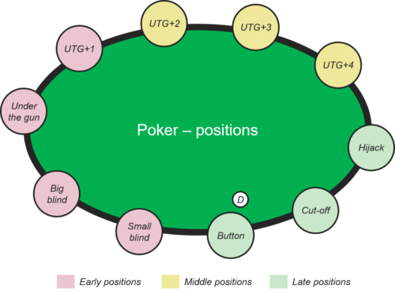
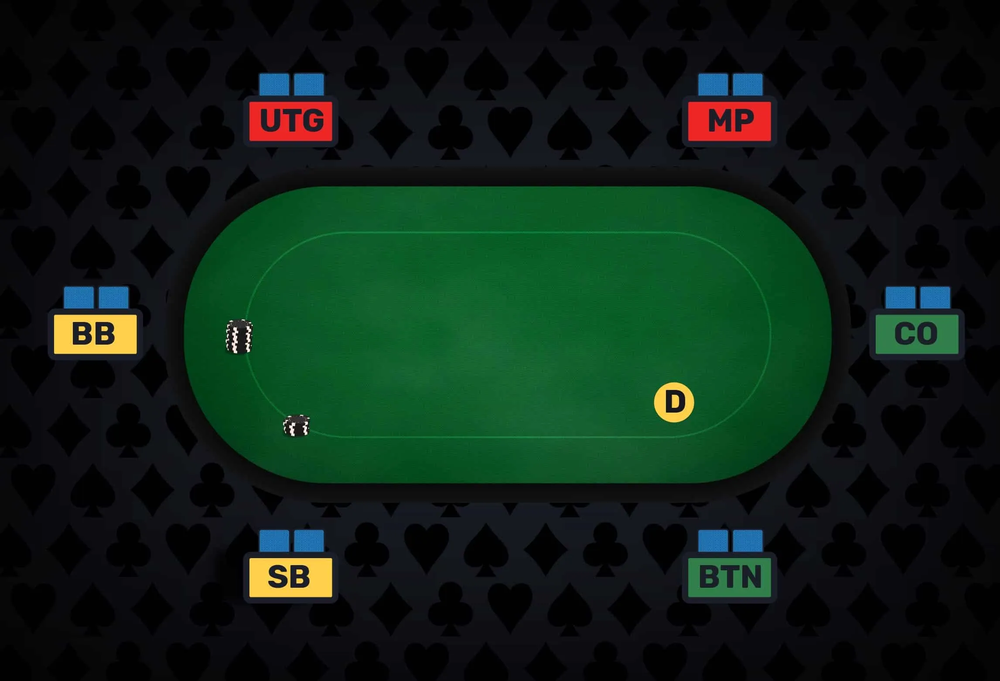

Le préflop est souvent sous-estimé, mais c'est la fondation absolue de votre jeu. C'est l'étape la plus importante et l'une des plus difficiles à maîtriser.
Plus vous êtes proche du "Bouton" (le dernier à parler), plus vous pouvez jouer de mains (ouvrir large).
Pourquoi ? Car vous avez plus de chances d'être "en position" (parler en dernier) après le flop. Cela vous donne un avantage d'information massif. De plus, moins il y a de joueurs à parler après vous, moins vous risquez de tomber sur une grosse main.
La logique :
Positions précoces (UTG, Lojack) = On joue serré (peu de mains, uniquement les très fortes).
Positions tardives (Cutoff, Bouton) = On joue large (beaucoup plus de mains).

Source de l'image: Wikipedia
Pour avoir un ordre d'idée, voici la proportion de mains que vous devriez jouer (ouvrir) en fonction de votre position :
UTG (Under The Gun) : ~17% des mains (très sélectif)
Lojack : ~24%
Hijack : ~29%
Cutoff : ~37%
Bouton : ~54% des mains (très agressif)
Mémoriser toutes les mains jouables à chaque position peut paraître insurmontable. Voici les astuces pour s'y retrouver :
Connaître les "Bottoms" (les limites basses) : Plutôt que d'apprendre toutes les mains, retenez la pire main jouable dans une catégorie. Par exemple, si vous savez qu'au Bouton, le "bottom" pour les As dépareillés (Offsuit) est A2o, vous savez que vous pouvez jouer tous les As dépareillés (A3o, A4o, etc.).
Créer des repères visuels : Au Lojack, le bottom des As dépareillés est A10o. Vous savez donc que plus vous approchez du bouton, plus ce repère descend (A9o, A8o, etc.) jusqu'à A2o.
La Régularité : La clé de la progression est de consulter des tableaux de ranges régulièrement (idéalement quelques minutes chaque jour ou chaque semaine) pour habituer votre œil et votre cerveau.
Adapter ses "Bottoms" : Les "bottoms" théoriques sont faits pour des joueurs expérimentés. Si vous débutez, n'hésitez pas à resserrer légèrement vos limites (ex: jouer à partir de A8o au lieu de A2o) pour éviter les situations compliquées post-flop. Mais ne soyez pas trop serré non plus, sous peine de perdre la valeur de votre position !
Faire attention aux absents : Soyez toujours vigilant à la table. S'il manque un joueur avant vous (par exemple l'UTG est absent), votre position réelle change. Vous gagnez une position et pouvez donc ouvrir votre jeu un peu plus largement (passer d'une stratégie Lojack à une stratégie Hijack, par exemple).
Une fois les 3 premières cartes dévoilées, une nouvelle dynamique commence. L'arme principale à maîtriser à cette étape est le Continuation Bet (C-Bet) : le fait de miser au flop alors que vous étiez déjà l'agresseur (celui qui a relancé) avant le flop.
La façon dont vous allez miser dépend directement des cartes qui tombent au flop :
Le Board "Sec" (Dry) : Des cartes dépareillées et éloignées (ex: Roi-8-2 de couleurs différentes). Il y a très peu de tirages possibles.
La Stratégie : Misez souvent, mais misez petit. (Environ 25% à 33% du pot). Vous avez souvent l'avantage et une petite mise suffit pour faire coucher les mains ratées de votre adversaire.
Le Board "Connecté" (Wet / Drawy) : Des cartes rapprochées ou de la même couleur (ex: Valet-9-7 avec deux Cœurs). Les tirages quintes ou couleurs sont très probables.
La Stratégie : Misez moins souvent, mais misez plus cher. (Environ 50% à 75% du pot). Si vous avez une bonne main, vous devez la protéger et faire payer cher les adversaires qui cherchent leur tirage.
Avant de miser, posez-vous ces deux questions rapides :
L'avantage de Range : Le flop favorise-t-il les grosses cartes que vous êtes censé avoir relancées préflop (As, Rois, Dames) ? Si oui, vous pouvez attaquer plus facilement.
L'avantage de "Nuts" (Le jeu max) : Qui a le plus de chances d'avoir frappé un brelan ou une suite parfaite sur ce flop ? Si les cartes centrales correspondent mieux aux mains que votre adversaire a tendance à simplement "payer" préflop (comme les petites paires ou les connecteurs), soyez prudent.
En Position (IP) : Vous parlez en dernier. Le C-Bet est votre meilleur ami. L'adversaire a "checké" vers vous, vous avez le contrôle absolu pour miser ou prendre une carte gratuite.
Hors Position (OOP) : Vous parlez en premier. C'est beaucoup plus difficile. La règle d'or est de checker beaucoup plus souvent, même avec certaines bonnes mains, pour contrôler la taille du pot et éviter de vous faire relancer par un joueur qui a l'avantage de la position sur vous.

Source de l'image : RedChip
Jouer dans les blindes est la situation la plus inconfortable au poker. Vous avez été forcé d'investir des jetons à l'aveugle et vous devrez parler en premier (hors position) pour tout le reste du coup après le flop. Voici comment limiter la casse et riposter intelligemment.
La Petite Blinde est statistiquement la pire position du poker. L'objectif ici n'est pas de gagner de l'argent, mais d'en perdre le moins possible.
L'erreur classique (le "Call") : La pire chose à faire est de simplement "payer" la relance d'un adversaire. Si vous faites cela, la Grosse Blinde derrière vous peut relancer très cher (squeeze) ou simplement payer, vous forçant à jouer une main moyenne, hors position, contre plusieurs joueurs.
La dynamique de la Grosse Blinde est très différente. Vous avez déjà investi une blinde entière, vous êtes le dernier à parler avant le flop (ce qui clôture l'action), et vous avez donc des conditions favorables pour jouer.
Le pouvoir des "Cotes du Pot" : Puisque vous avez déjà payé une grande partie de la mise obligatoire, vous bénéficiez d'une "réduction" (un bon prix) pour aller voir le flop. Vous pouvez donc "défendre" (payer la relance) avec beaucoup plus de mains, notamment les cartes de la même couleur (assorties) ou qui se suivent (connecteurs).
Adaptez-vous à l'agresseur :
S'il relance de loin (UTG) : Il a une main très forte. Soyez prudent et défendez avec un jeu solide.
S'il relance du Bouton ou de la SB : Il essaie souvent de voler votre blinde avec des cartes moyennes. C'est ici que vous devez défendre très largement votre territoire pour ne pas vous laisser marcher dessus.
Le piège mental : Ce n'est pas parce que vous avez mis une blinde au centre qu'elle vous appartient encore. Ne tombez pas dans l'excès en défendant des mains "poubelles" (comme 9-3 ou Valet-4) sous prétexte que "ce n'est pas cher de voir le flop". Hors position, une mauvaise main vous coûtera souvent très cher.